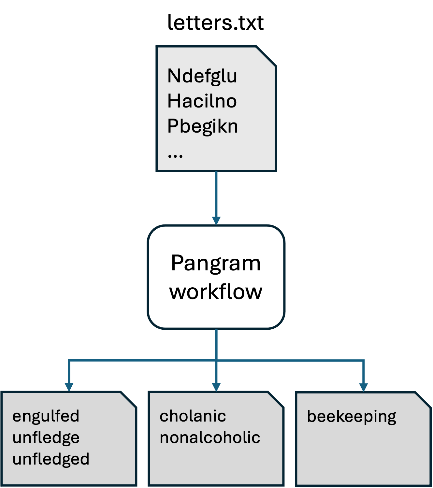
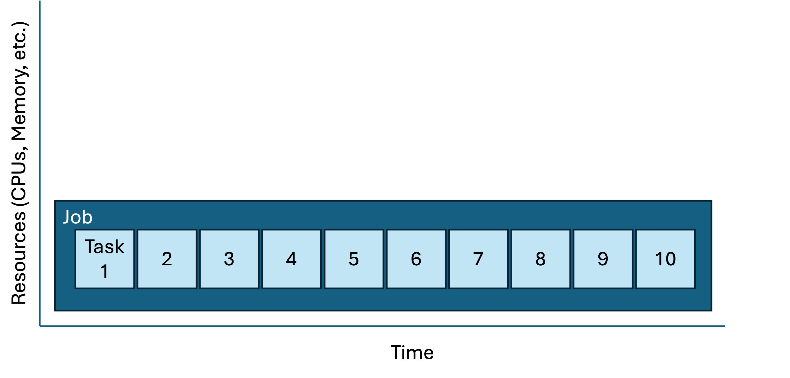
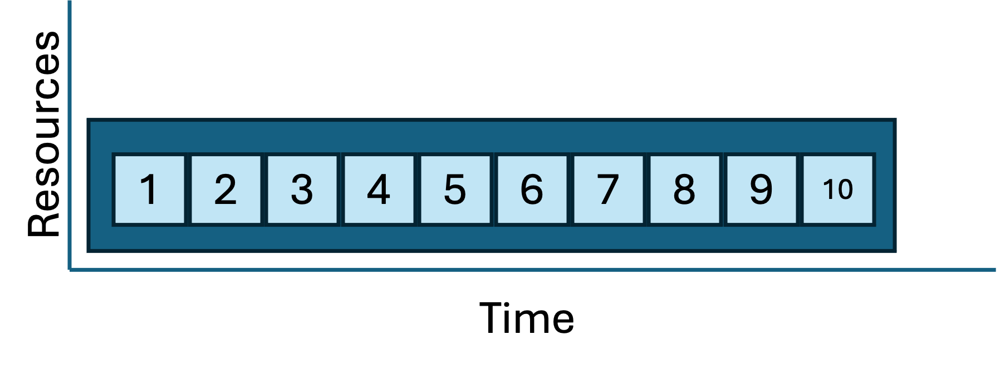
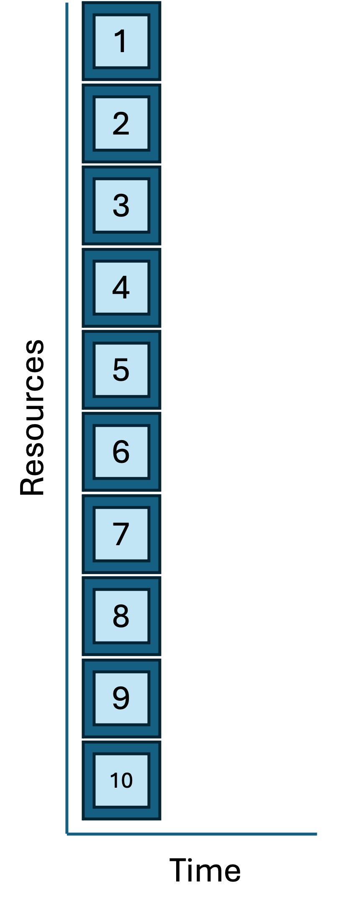

By the end of this module, we will:
- Understand what workflow automation is and how it helps
reproducibility.
- Review several different ways to execute repetitive tasks on Great
Lakes.
- Introduce the idea of job/task geometries to visualize approachs and
their advantages and limitations.
Workflow automation helps reproducibility
Data-intensive research entails transforming raw data into more
meaningful/valuable results. Often, this involves a series of step-wise
transformation tasks. To make this research reproducible by someone
else, all the transformations must either be documented so that a human
can reproduce them, or automated so a computer can. A reproducible
solution has a blend of documentation and automation.
Data-intensive research often involves repeating transformation tasks
many times. Also overtime transformations evolve to be more complex,
more computationally demanding, or take longer. A
workflow describes the key transformation tasks and
their relationships to the inputs and outputs.
Workflow automation describes the tools and
techniques to systematically assemble these tasks into a executable,
repeatable, robust solution. Building an automated workflow appears
harder than documenting it to be run manually, but there are many
benefits to reproducibility:
- Automation facilitates repetition.
- Automation can simplify manual documentation.
- Automation simplifies validation of your workflow.
- Automation streamlines sharing.
- Automation scales to larger inputs
There are many ways to build an automated workflow. In this module we
will consider several ways of executing pleasingly parallel tasks on Great Lakes:
- A serial task loop
- Parallelizing tasks using driver scripts and sbatch files.
- The SLURM Launcher
All these approaches execute the same workflow in different ways. The
workflow produces word pangrams. A word pangram is like
an anagram that allows repeating letters, e.g. the sequence of letters
ACEHMNT can be rearranged to create the pangrams ATTACHMENT, CATCHMENT,
ENCHANTMENT, and ENHANCEMENT.
The workflow accepts a text file containing list of letter sequences
separated by lines; for each letter sequence it produces a file
containing one or more pangrams.

Pangram: A serial task loop
# Orient on project pangram
cd /nfs/turbo/umms-bioinf-wkshp/workshop/home/$USER
cd project_pangrams
ls -1
pangram_job_launcher
pangram_parallel_sbatch
pangram_serial_loop
README.md
cd pangram_serial_loop
ls -1
find_pangrams.sbat
find_pangrams.sh
letters.txt
pangram.sh
README.md
Let’s consider a few of these files in turn, starting with the
README.
|
README.md
|
# pangram_serial_loop
- Produces pangrams for inputs in letters.txt.
Makes one file for each line in letters.
- cgates 6/1/2024
- Usage:
./find_pangrams.sh #to run locally
or
sbatch find_pangrams.sbat # to submit to worker node
Files:
- find_pangrams.sbat: SLURM batch file; calls find_pangrams.sh
- find_pangrams.sh: Loops throught input and calls pangram.sh
- letters.txt: list of letter sequences seperated by newlines.
- pangram.sh: accepts a single letter sequence and prints all pangrams.
|
The pangram.sh script is the workhorse of this workflow. You are
welcome to look at the implementation, but for our purposes we can treat
it as a black box. We’ll run it once to see it in action.
./pangram.sh lovely
lovely
lovey
volley
Consider the input to the workflow:
|
letters.txt
|
Ndefglu
Hacilno
Tdghnou
Nailmpt
Pbegikn
Yacilrt
Achnopy
Uginoqt
Eachkmn
Alhyidn
|
And finally, the script we will launch to execute the workflow:
|
find_pangrams.sh
|
#/bin/bash
set -eu
for letters in $(cat letters.txt); do
echo pangrams for: $letters >> /dev/stderr
./pangram.sh $letters > results.${letters}.txt
done
echo done >> /dev/stderr
|
Having reviewed the inputs and scripts, we can launch the workflow
like as shown below. (This project is called “serial loop” because in
this workflow we are looping over the inputs and processing one at a
time.)
./find_pangrams.sh
pangrams for: Ndefglu
pangrams for: Hacilno
pangrams for: Tdghnou
pangrams for: Nailmpt
pangrams for: Pbegikn
pangrams for: Yacilrt
pangrams for: Achnopy
pangrams for: Uginoqt
pangrams for: Eachkmn
pangrams for: Alhyidn
We see the results files have been added:
ls
find_pangrams.sbat results.Achnopy.txt results.Ndefglu.txt
find_pangrams.sh results.Alhyidn.txt results.Pbegikn.txt
letters.txt results.Eachkmn.txt results.Tdghnou.txt
pangram.sh results.Hacilno.txt results.Uginoqt.txt
README.md results.Nailmpt.txt results.Yacilrt.txt
cat results.Achnopy.txt
cacophony
Question: Which letter combination generated the most
pangrams?
Let’s run it again but instead of using the login-node, we’ll submit
this to a worker node using the provided sbat script:
# first clear out the old results
rm results.*
sbatch find_pangrams.sbat
Submitted batch job 1234567
Use squeue -u $USER to see when the job is finished and
then review the outputs. We now see the results files and also the slurm
log file:
find_pangrams.sbat results.Alhyidn.txt results.Tdghnou.txt
find_pangrams.sh results.Eachkmn.txt results.Uginoqt.txt
letters.txt results.Hacilno.txt results.Yacilrt.txt
pangram.sh results.Nailmpt.txt slurm-1234567.out
README.md results.Ndefglu.txt
results.Achnopy.txt results.Pbegikn.txt
This approach is correct, clear, and reproducible; however it’s not
ideal. Consider how the tasks are contained within a job:
|
Job/task geometry of the serial loop approach
|
|

|
|
Each sbatch request is a job script; a job script may be composed of
multiple tasks. Key attributes of a job script are
- what sub-tasks will I run?
- how many resources do I need?
- how long will I need to run?
You can represent these graphically by making boxes for each job and
their tasks (height = resource request and length = time). In the case
above, there are many similar tasks contained in a single job. This
diagram is a rough representation of the job/task
geometry. This is a useful way of visualizing and comparing
approaches; also, the job geometry is critically useful information to
the scheduler which is trying to pack everyone’s jobs into the available
clusters as neatly/efficiently as possible.
|
Considering that each of these pangram tasks are completely
independent of each other (i.e. pleasingly parallel). We might be able
to make better use of our ~16000 CPUs by parallelizing the workflow. The
approaches below show two different ways to accomplish this.
Pangram: Parallel SBATCH
# Orient on project
cd /nfs/turbo/umms-bioinf-wkshp/workshop/home/$USER
cd project_pangrams/pangram_parallel_sbatch
ls -1
letters.txt
make_sbat_scripts.sh
pangram.sh
README.md
run_sbat_scripts.sh
|
README.md
|
# pangram_parallel_sbatch
- Produces pangrams for letters.txt. Makes one file per line in letters.
- cgates 6/1/2024
- Usage:
`./make_sbat_scripts.sh`
`./run_sbat_scripts.sh`
Files:
- letters.txt: list of letter sequences seperated by newlines.
- pangram.sh: accepts a single letter sequence and prints all pangrams.
- make_sbat_scripts.sh : Build sbat scripts based on letters.txt;
for each row in letters.txt adds a new sbat file.
- run_sbat_scripts.sh : Submit all sbat scripts for cluster execution
|
Executing make_sbat_scripts creates a new directory and adding a
collection of sbat files.
./make_sbat_scripts.sh
ls sbat_scripts
...
Achnopy.sbat Nailmpt.sbat Uginoqt.sbat
Alhyidn.sbat Ndefglu.sbat Yacilrt.sbat
Eachkmn.sbat Pbegikn.sbat
Hacilno.sbat Tdghnou.sbat
Consider a single sbat file.
|
sbat_scripts/Achnopy.sbat
|
#!/bin/bash
#SBATCH --job-name=pangram_Achnopy
#SBATCH --cpus-per-task=1
#SBATCH --nodes=1
#SBATCH --ntasks-per-node=1
#SBATCH --mem-per-cpu=400m
#SBATCH --time=00:05:00
#SBATCH --account=bioinf_wkshp_class
#SBATCH --partition=standard
./pangram.sh Achnopy > results.Achnopy.txt
|
Briefly consider the script to see how these sbat files was
constructed. Note the SLURM preamble directives are integrated into the
new files using a HereDoc.
|
make_sbat_scripts.sh
|
#!/bin/bash
set -eu
mkdir -p sbat_scripts
for letters in $(cat letters.txt); do
echo sbat for: $letters >> /dev/stderr
cat << HERE_DOC > sbat_scripts/$letters.sbat
#!/bin/bash
#SBATCH --job-name=pangram_${letters}
#SBATCH --cpus-per-task=1
#SBATCH --nodes=1
#SBATCH --ntasks-per-node=1
#SBATCH --mem-per-cpu=400m
#SBATCH --time=00:05:00
#SBATCH --account=bioinf_wkshp_class
#SBATCH --partition=standard
./pangram.sh $letters > results.${letters}.txt
HERE_DOC
done
echo done >> /dev/stderr
|
We can submit jobs one at a time using sbatch. OR we could build a
for loop to automate submission; conveniently
run_sbat_scripts.sh has done this for us.
|
run_sbat_scripts.sh
|
for sbat in $(ls sbat_scripts/*.sbat); do
sbatch $sbat
done
|
Before we execute run_sbat_scripts.sh, you might
consider opening a separate window to monitor the SLURM job queue. In
this second window, you can execute watch squeue -u $USER
to see how the jobs are being scheduled. Hit ctrl-C to exit watch. (More
info on watch.)
./run_sbat_scripts.sh
Submitted batch job 9289496
Submitted batch job 9289497
Submitted batch job 9289498
Submitted batch job 9289499
Submitted batch job 9289500
Submitted batch job 9289501
Submitted batch job 9289502
Submitted batch job 9289503
Submitted batch job 9289504
Submitted batch job 9289505
And in a few short seconds, you see the results and SLURM log files.
This approach is correct, more complex than the serial loop, and
reproducible. And because the tasks are working in parallel, it’s
much faster. Contrast this job/task geometry with the
serial loop approach from above:
|
Job/task geometries: serial loop vs parallel sbatch
|
|

|
|

|
This is great. But there’s two to three minor drawbacks to this
approach:
- Between the the sbat files, the result files, and the slum log
files, it’s created quite a lot more files. They are smallish files, but
it’s more output to keep track of.
- When the scheduler is under a heavy load, for very quick jobs
(<=60 seconds) it can take longer to schedule a job than it takes to
run the job. In these circumstances the serial approach might be faster.
(If we scaled up from 10 jobs to 1000 jobs in parallel, we might see
this kind of slowdown.)
- Each ARC account has an upper limit on the number of jobs that can
be submitted and the number actively running. If your account exceeds
this limit the jobs will start to queue up, awaiting a turn at
scheduling and execution. That’s not a big problem, except for the fact
that you share the account with other users. If you saturate your queue,
others will have to wait until your job finishes before starting
theirs.
To address these concerns, the Texas Advanced Computing Center built
a SLURM tool called launcher detailed below.
Pangram: Launcher
# Orient on project
cd /nfs/turbo/umms-bioinf-wkshp/workshop/home/$USER
cd project_pangrams/pangram_launcher
ls -1
launcher.sbat
letters.txt
make_launcher_tasks.sh
pangram.sh
README.md
|
README.md
|
# pangram_launcher
- Produces pangrams for letters.txt. Makes one file per line in letters.
- cgates 6/1/2024
- Usage:
`./make_launcher_tasks.sh`
`sbatch launcher.sbat`
Files:
- launcher.sbat: sbatch file to start the launcher.
- letters.txt: list of letter sequences seperated by newlines.
- make_launcher_tasks.sh: builds a single file for all tasks to be executed
by the launcher.
- pangram.sh: accepts a single letter sequence and prints all pangrams.
|
Run make_launcher_tasks.sh and note it creates one new
file launcher_tasks.txt.
./make_launcher_tasks.sh
|
launcher_tasks.txt
|
./pangram.sh Ndefglu > results.Ndefglu.txt
./pangram.sh Hacilno > results.Hacilno.txt
./pangram.sh Tdghnou > results.Tdghnou.txt
./pangram.sh Nailmpt > results.Nailmpt.txt
./pangram.sh Pbegikn > results.Pbegikn.txt
./pangram.sh Yacilrt > results.Yacilrt.txt
./pangram.sh Achnopy > results.Achnopy.txt
./pangram.sh Uginoqt > results.Uginoqt.txt
./pangram.sh Eachkmn > results.Eachkmn.txt
./pangram.sh Alhyidn > results.Alhyidn.txt
|
This might remind you of the serial loop approach, but there’s a
twist and to see it you need to consider the launcher.sbat
file:
|
launcher.sbat
|
#!/bin/bash
#SBATCH --account=bioinf_wkshp_class
#SBATCH --partition=standard
#SBATCH --nodes=1
#SBATCH --ntasks-per-node=5
#SBATCH --cpus-per-task=1
#SBATCH --time=0:30:00
module load launcher
export LAUNCHER_JOB_FILE=launcher_tasks.txt
paramrun
|
|
Some details:
- The file starts with a basic SLURM preamble. Note that it’s asking
for 1 node, and 5 CPUs (5 tasks/node * 1 cpu/task) for 30 minutes.
- The last three lines establish that this is a launcher job and the
tasks to execute live in launcher_tasks.txt.
|
Given this setup, sbatch will allocate a node with 5 CPUs for 30
minutes. Then the launcher will start looping through the launcher_tasks
and as each one completes it will send another one through until all
tasks are complete.
Consider running watch squeue -u $USER in another window
before you run the sbatch command:
sbatch launcher.sbat
Submitted batch job 9290535
Note that all the tasks are running but they are running “inside”” of
the one job. The job should finish in a few seconds. It will produce the
familliar results.* files and also a single SLURM log file
which is a bit more interesting than the previous log files.
|
slurm-9290535.out
|
WARNING (06/09/24 15:38:39): LAUNCHER_WORKDIR variable not set. Using current directory.
windowsP is false
NOTE (06/09/24 15:38:40): Started dynamic task service on port 9471
Launcher: Setup complete.
------------- SUMMARY ---------------
Number of hosts: 1
Working directory: /nfs/turbo/umms-bioinf-wkshp/workshop/home/cgates/project_pangrams/pangram_launcher
Processes per host: 5
Total processes: 5
Total jobs: 10
Scheduling method: dynamic
-------------------------------------
Launcher: Starting parallel tasks...
using /tmp/launcher.9290535.hostlist.GYzdOWsB to get hosts
starting job on gl3079
Warning: Permanently added the ED25519 host key for IP address '10.164.8.129'
to the list of known hosts.
Launcher: Task 0 running job 1 on gl3079.arc-ts.umich.edu (./pangram.sh Ndefglu > results.Ndefglu.txt)
Launcher: Job 1 completed in 1 seconds.
Launcher: Task 0 running job 2 on gl3079.arc-ts.umich.edu (./pangram.sh Hacilno > results.Hacilno.txt)
Launcher: Task 2 running job 3 on gl3079.arc-ts.umich.edu (./pangram.sh Tdghnou > results.Tdghnou.txt)
Launcher: Job 3 completed in 1 seconds.
...
Launcher: Task 0 done. Exiting.
Launcher: Done. Job exited without errors
|
The launcher solution is correct, clear, and efficient. It is a very
nice option if you have many independent tasks that each run
quickly (<=60 seconds) and each tasks has a modest compute request
(e.g. each task needs a single CPU).
Geometries and dependencies
|
Job/task geometries compared
|
|
|
|
|

|
The three job geometries diagrammed above hint that we quietly made a
a few simplifying assumptions along the way:
- We assumed that all the tasks were independent (and thus pleasingly
parallel).
- We assumed that all the tasks in a workflow were the same
transformation applied many different inputs.
Commonly workflows contain several different steps which where the input
of one step often depends on the output of the previous.
Also steps in a workflow often have variable resrouce needs and run
times:
Moreover, workflows are not always linear; the logical flow of steps may
join the outputs of two steps as an input to a third:
The techniques we reviewed above are execllent for smaller, simpler
workflows, a more complex, more resource intensive workflow will require
either a much more nuanced set of scripts or a more sophisticated
approach altogether. SLURM supports these more complex scenarios
natively with something called job arrays (see job arrays in links below). In the next module, we
introduce the Snakemake workflow automation framework
to address these more complicated scenarios.
Pro tips
Automating workflows is a learning process. Here’s a few ideas to
consider along the way:
Do not try to automate something that you cannot do by
hand.
Make it right. Make it clear. Make it efficient. (In that
order.)
Build a README for each workflow. Consider
including:
- Your name/email
- The date
- How to install the workflow
- How to run the workflow
- Any necessary context/constraints that would help your future
collaborator reproduce your results.
Automate the workflow with the data you have.
Don’t generalize a workflow too soon. You might see that a workflow
could be parameterized/extended to apply to new types of data. Feel that
excitement, note the opportunity in the README, and trust that you will
make that change when you need to.
Instead of developing the whole workflow end to end,
consider an iterative and incremental approach.
Break workflow development into steps:
- do part of the workflow for one sample and verify correctness as you
add steps. (For a large dataset consider subsetting/downsampling your
inputs so you can iterate quicker.)
- run a single sample end to end
- scale to a few samples and check those outputs; tune resource
allocations
- run the whole batch
Exercise: Project Railfence
This project is focused around a transformation that can encode or
decode a specific kind of encryption called a rail fence cipher. The details of this encryption
are interesting and I encourage you to check out the link, but for the
purposes of this exercise it’s ok to treat it as magic/black-box
transformation.
Review the project directory here:
cd /nfs/turbo/umms-bioinf-wkshp/workshop/home/$USER
cd project_railfence
ls -1
codes.txt
railfence_decode.py
railfence_encode.py
README.md
The railfence_decode.py script accepts two arguments
separated by a comma:
- a number (a positive integer)
- a quoted string (the cipher text)
It returns the decoded clear text. You can run the
railfence_decode.py script like so:
# need to load python once in the session
module load python
./railfence_decode.py 3,"wrivdetceaedsoee-lea ne crf o!"
we are discovered-flee at once!
There is a list of encrypted codes in the
codes.txt file:
|
codes.txt
|
2,"onttyt uoaesmtigta o antd yhn"d o r oatmt oehn htyucno ob ad
3,"e hM craifi.nar.mk trgt aei la.Mk tefcet I htodr)aii.kte e in(t e"
4,"aefie aamth klwth ayhvuoetwro htdto et ow au"
5,"rrnmpce eaadeeap"odatt rn rhniniieictlocs vnaa
3,"t DwieaRAM"r EE
3,"lsie"m!
|
Your task:
- Consider the three automation approaches outlined in the lessons
above: serial loop, parallel batch, and launcher.
- Choose one approach, and, using the patterns above as a template,
create script(s) that will decrypt the codes in
code.txt.
- If you complete the exercise with a one approach, repeat the
exercise with a different approach.
Key ideas
- Achieving reproducible research requires a blend of documentation
and automation.
- Be kind to your future self; they will thank you for the README you
left them.
- Automation helps reproducibility:
- Automation shrinks your README.
- Automation simplifies validation of your workflow.
- Automation enables repetition.
- Automation streamlines sharing.
- Automation scales to larger inputs
- Job/task geometries help visualize how different approaches are
executed. (It also hints at the n-dimensional game of Tetris the
job-scheduler is playing to pack everyones jobs as neatly as
possible.
- The SLURM launcher allows you to gather many
parallel tasks into a main job, in effect creating a transient
sub-cluster within the main HPC.
- For a more complex transformation, ascript can be either simple or
resource efficient - choose one. Consider more robust solutions (e.g.
Snakemake) as necessary.
Links and references
UM ITS docs on launcher
UM ARC docs on job arrays
SLURM docs on job arrays
UM ARC miVideo on advanced SLURM techniques (including
launcher, job arrays, and more)
For more examples of pangrams in action, checkout:
